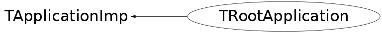

class TRootApplication: public TApplicationImp
TRootApplication This class create the ROOT native GUI version of the ROOT application environment. This in contrast to the Win32 version. Once the native widgets work on Win32 this class can be folded into the TApplication class (since all graphic will go via TVirtualX).
Function Members (Methods)
public:
| TRootApplication(const TRootApplication&) | |
| TRootApplication(const char* appClassName, Int_t* argc, char** argv) | |
| virtual | ~TRootApplication() |
| virtual const char* | TApplicationImp::ApplicationName() const |
| static TClass* | Class() |
| TGClient* | Client() const |
| virtual Int_t | TApplicationImp::ExecCommand(TGWin32Command* code, Bool_t synch) |
| virtual void | Hide() |
| virtual void | Iconify() |
| virtual void | Init() |
| virtual TClass* | IsA() const |
| virtual Bool_t | IsCmdThread() |
| virtual void | Lower() |
| virtual void | Open() |
| TRootApplication& | operator=(const TRootApplication&) |
| virtual void | Raise() |
| virtual void | Show() |
| virtual void | ShowMembers(TMemberInspector& insp) |
| virtual void | Streamer(TBuffer& b) |
| void | StreamerNVirtual(TBuffer& b) |
private:
| TRootApplication() | |
| void | GetOptions(Int_t* argc, char** argv) |
Data Members
protected:
| TString | TApplicationImp::fApplicationName | application name |
private:
| TGClient* | fClient | pointer to the client environment |
| char* | fDisplay | display server to connect to |
Class Charts
{kind=link}
{kind=link}
{kind=link}
{kind=link}

Function documentation
TRootApplication(const char* appClassName, Int_t* argc, char** argv)
Create ROOT application environment.
void GetOptions(Int_t* argc, char** argv)
Handle command line arguments. Arguments handled are removed from the
argument array. Currently only option "-display xserver" is considered.
TRootApplication(const char* appClassName, Int_t* argc, char** argv)